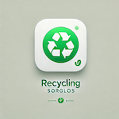

Nachhaltigkeit im Alltag
Recycling-Sorglos bringt Klarheit in die Mülltrennung.
Was gehört in den Gelben Sack? Wohin mit Glas, Elektroschrott oder Bioabfall? Recycling-Sorglos hilft dir dabei, Abfall schneller richtig einzuordnen und nachhaltigere Entscheidungen im Alltag zu treffen.

Recycling-Sorglos
Besser sortieren, bewusster entsorgen
Mülltrennung
Alltagshilfe
Datenbasiert
Praktischer Nutzen
Weniger Unsicherheit bei jedem Griff zur Tonne.
Schnell nachschlagen
Wichtige Kategorien wie Plastik, Glas, Papier, Bio oder Sondermüll sind klar zugeordnet.
Alltagstauglich erklärt
Beispiele helfen dabei, typische Gegenstände ohne langes Recherchieren richtig einzuordnen.
Potenzial für smarte Erkennung
Im Projekt ist bereits ein Modell hinterlegt, das die App langfristig noch intelligenter machen kann.
Besonders hilfreich für
- Haushalte mit Kindern oder vielen Verpackungen
- Menschen, die nachhaltiger leben wollen
- Alle, die bei Sonderfällen schnell Klarheit brauchen
Warum Recycling-Sorglos sinnvoll ist
- Richtige Trennung spart Zeit und vermeidet Fehlentsorgung.
- Beispiele machen abstrakte Regeln greifbar.
- Die App unterstützt einen nachhaltigeren Alltag ohne moralischen Druck.
Kontakt
Fragen zu Recycling-Sorglos?
Wenn du Hilfe brauchst oder Anregungen hast, ist der Support direkt erreichbar.